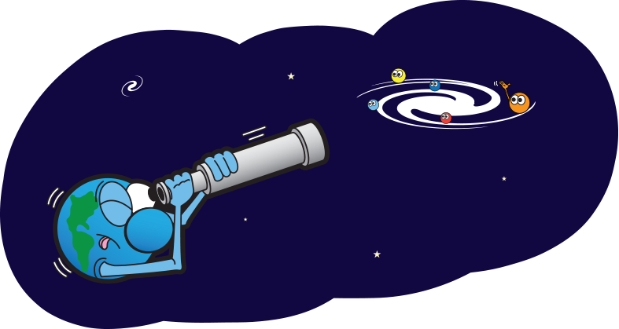

What is a Planet?
It was decided in 2006 by the astronomical Union, that a planet must have three qualities:
- It must orbit a star (in our cosmic neighborhood, the sun).
- It must be big enough to have enough gravity to force it into a spherical shape.
- It must be big enough that its gravity cleared away any other objects of a similar size near its orbit around the Sun.
Why is this important?
It is important to define the term planet, because the definition of a planet reflects our understanding of the origins, architecture, and evolution of our solar system. Throughout history, humans have changed their definitions of planets. For Example, the ancient Greeks categorized both Earth’s moon and the sun as planets, and Earth was not considered to be a planet, but instead a central object about which all other celestial objects rotated. Eventually some humans created a model in which the Sun was at the center of the Solar System. Many consider Aristarchus of Samos to have created the first model with the sun at the center of the solar system in the third century B.C.E., however it was not widely accepted. The idea was revived however in the 16th century by Nicholas Copernicus, and with the invention of the telescope in the 17th century, astronomers found empirical evidence to prove that the sun was at the center of the Solar System.
The first debate about Planet-hood occurred when in 2005 a team of astronomers found a tenth planet similar in size to Pluto, as a result many people wondered what it meant to be a planet. The International Astronomical Union (IAU) eventually defined what it means to be a planet, and in 2006 made a classification for what it means to be a planet and established a new category of planet, a dwarf planet.
 click here to learn about our planet: Earth
click here to learn about our planet: Earth